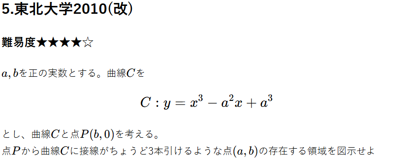

重要ポイント
ある点\( P \)から曲線へ引く接線の本数に関する問題。 接点と接線の数が\( 1:1 \)で対応しているので、接点の数だけ接線が存在する。つまり接点が３つ存在すればよい。 接線の式に通る点\( P \)を代入することで\( a, b, t \)の方程式ができるので、 $$ tを変数としてみる三次方程式 $$ と考え、この三次方程式が解を三つ持つ条件を考えることになる。
解説
曲線\( C \)上の点を実数\( t \)を用いて\( (t, t^3 - a^2x + a^3) \)とする。ここで、 $$ y' = 3x^2 - a^2 $$ であるから接線の方程式は、 $$ y = (3t^2 - a^2)(x - t) + t^3 - a^2x + a^3 $$ $$ = (3t^2 - a^2)x -2t^3 + a^3 $$ この直線が点\( P(b, 0) \)を通るので、 $$ 0 = (3t^2 - a^2)b -2t^3 + a^3 $$ $$ 2t^3 - 3bt^2 - a^3 + a^2b = 0 $$ ここで、\( (左辺) = f(t) \)とする。 接線と接点は\( 1:1 \)で対応しているので接点の数と接線の本数は等しい。接点の数は\( t \)の数と等しい。 つまり、\( f(t) = 0 \)が異なる３つの実数解を持てばよい。 $$ f'(t) = 6t^2 - 6bt $$ $$ = 6t(t - b) $$ 従って以下のような増減表が得られる
| \(t\) | \( 0 \) | \( b \) | |||
|---|---|---|---|---|---|
| \( f'(t) \) | + | 0 | - | 0 | + |
| \( f(t) \) | ↗ | \( f( 0) \) | ↘ | \( f(b ) \) | ↗ |

境界線はなし
全体まとめ
接線の本数問題。接線の数と接点の数は1:1に対応しているので、
$$接点の数を考える問題$$
に帰着させることができる。接点を\( t \)でおき接線の式を立てると、
$$ tについての三次方程式 $$
を立てることができる。これが３つの異なる解を持つ条件を考える。
三次関数が異なる三つの実数解を持つとき、
$$ (極小値) < 0 , (極大値) > 0 $$
が条件となる。ここから\( a, b \)の関係式を立てることとなる。
この問題は今回解説した問題を多くの要素を持っているので人に説明できるレベルまで習得することが大切。